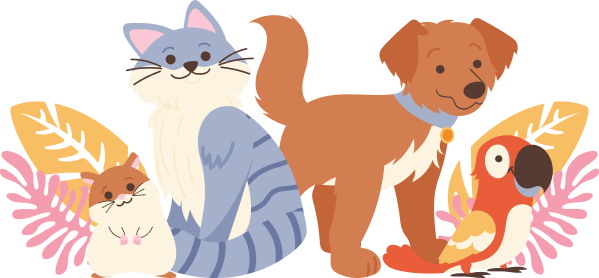

Why Choose
Pet Care Companion?
Choosing "Pet Care Companion" as your guidebook is an excellent decision for pet owners seeking a reliable source of information and advice. This book stands out for its comprehensive coverage on pet care, expert insights, and practical tips that cater to the well-being and happiness of pets. It's designed to help you build a stronger bond with your pet, ensuring they lead a healthy, joyful life. It's a valuable resource for anyone dedicated to the care and happiness of their furry friend.
What You'll Find Here
In "Pet Care Companion," you'll find a treasure trove of knowledge and insights dedicated to pet care. This guide encompasses a wide range of topics, including health, nutrition, behavior, and emotional well-being, providing practical advice and strategies to enhance the life of your pet. It's an invaluable resource for pet owners who are committed to providing the best care possible, offering both foundational knowledge and advanced tips to ensure a happy, healthy companion.
Expert Advice
We commit to providing expert advice, ensuring pet owners have access to authoritative guidance on various aspects of pet care. This commitment includes insights from veterinary professionals and animal care experts, offering you the best strategies for maintaining your pet's health, behavior, and overall well-being.
Playing
We emphasize the importance of play in "Pet Care Companion," offering strategies to engage your pet in fun, stimulating activities that promote their physical and mental health. Through expert advice, we provide innovative play ideas that cater to the unique needs of pets, enhancing their happiness and strengthening the bond between pets and their owners.
Strong Relation
We highlight the essence of fostering a strong relationship between pets and their owners. This core aspect is about deepening the bond through understanding, communication, and shared experiences. Our advice focuses on building trust and affection, ensuring a lasting, meaningful connection.
Healthy
The focus on health encompasses comprehensive strategies to ensure pets thrive physically and mentally. Our guidance covers nutrition, exercise, preventative care, and recognizing signs of health issues, aiming to equip pet owners with the knowledge to make informed decisions for their pets' well-being.

Get Started Today
Ready to embark on your journey to becoming the ultimate pet parent? Start exploring our website now and discover a treasure trove of valuable resources to help you care for your pet in the best possible way. Thank you for choosing Pet Care Companion as your trusted partner in pet care.
